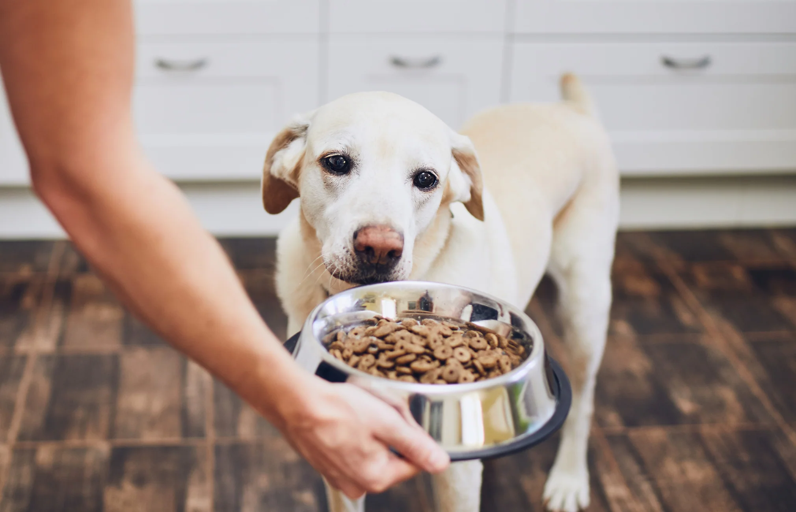

A balanced diet is the foundation of a long, healthy life for your dog. At PurrPets, we recommend high-quality protein and avoiding harmful "human foods."

Knowing what not to feed your dog is just as important as knowing what to feed them. Refer to this table before sharing snacks:
| Safe Treats | Dangerous / Toxic | Notes |
|---|---|---|
| Carrots | Chocolate | Chocolate contains theobromine, which is toxic. |
| Plain Blueberries | Grapes & Raisins | Grapes can cause sudden kidney failure in dogs. |
| Cooked Chicken | Onions & Garlic | These can damage a dog's red blood cells. |
| Seedless Watermelon | Xylitol (Sweetener) | Often found in sugar-free gum; extremely deadly. |
How often you feed your dog depends on their stage of life:
Consult with your veterinarian before switching to a grain-free diet, as some studies suggest links to heart health issues in certain breeds.